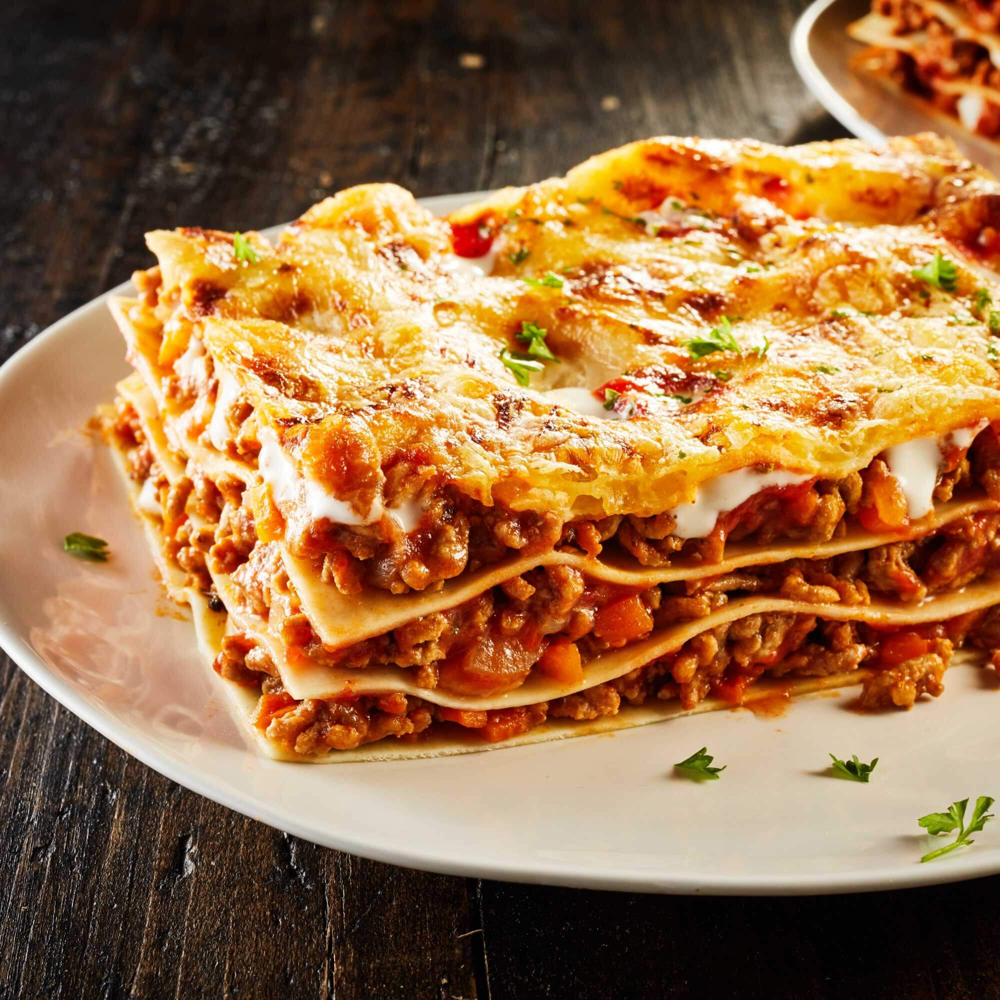
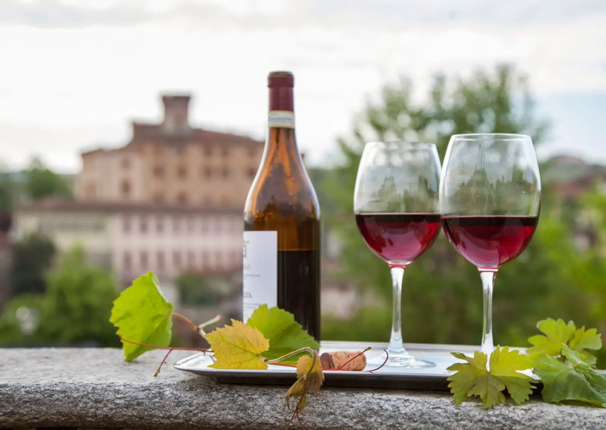

Step into a realm where pasta swirls like enchanted ribbons, pizza dough
rises with a touch of magic, and gelato flavors are spun from dreams.
Welcome to La Trattoria del Cuore, a fantastical Italian haven where
every bite is a journey into a culinary fairy tale!

Picture this:
cobblestone streets, twinkling fairy lights, and the aroma of amore
wafting through the air. At La Trattoria del Cuore, we've conjured a
dining experience that transcends the ordinary and catapults you into a
world where flavors are fanciful and the ambiance is pure enchantment.

Chef's wand (ahem, we mean hands) crafts dishes that dance on your
taste buds—each bite tells a tale of culinary sorcery. From the Amore
Pesto Pasta that captures the essence of a moonlit garden to the
Fantasia Pizza that teleports you to a cheese lover's paradise, every
dish is a chapter in the story of La Trattoria del Cuore.

But the magic doesn't stop there. Our gelato bar is a swirling vortex of delight, where flavors like Moonlit Mango and Unicorn Mint await your discovery. And for those looking to embark on a communal feast, our La Famiglia Feast is a spellbinding spread meant to be shared, uniting friends and family in a gastronomic celebration. 
So, grab a seat at our whimsical tables, let the imaginary Italian melodies serenade your senses, and prepare for a dining experience that transcends reality. La Trattoria del Cuore: where every meal is a page in a culinary fairy tale, and every guest is a character in the story of flavor and fun! Buon Appetito and welcome to our magical world! 🍝✨ 